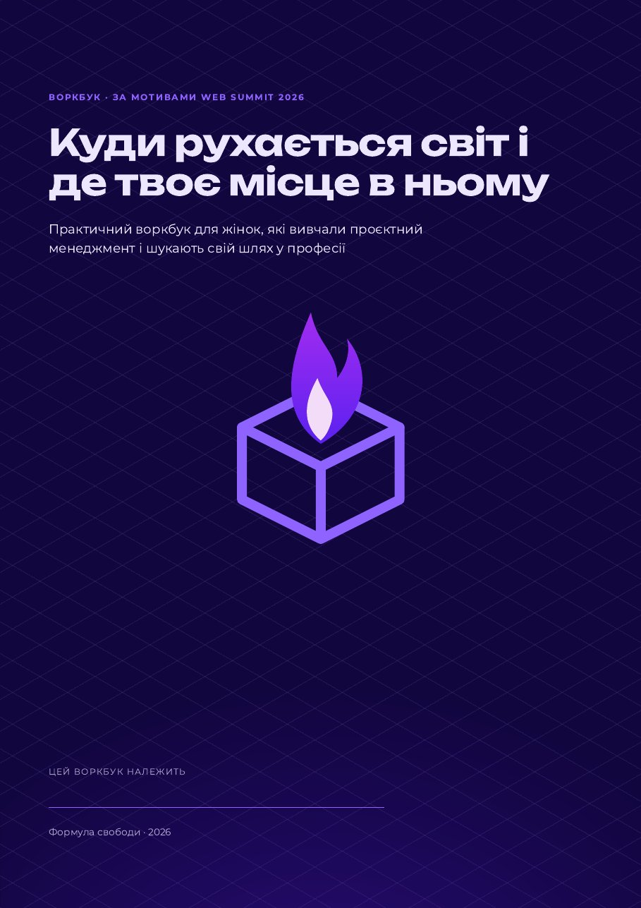

Куди рухається світ і де твоє місце в ньому
Практичний воркбук для жінок, які вивчали проєктний менеджмент і шукають свій шлях у професії.
Ми зібрали головне з Web Summit 2026 і великих прогнозів на найближчі 10 років. Простими словами і з вправами, які ти робиш саме про себе.

Ринок не зник. Він перебудовується
Курс пройдено, знання є, а робота не знаходиться. Десятки відгуків і тиша або відмови, навіть на вакансії з невеликою зарплатою. Скрізь пишуть «потрібен досвід», а звідусіль чути, що ШІ скоро всіх замінить. Якщо це про тебе, з тобою все гаразд: ринок справді сильно змінився.
Але в одних місцях роботи стає менше, а в інших людей, які вміють організовувати процеси й доводити справи до результату, бракуватиме ще багато років. Просто ці місця часто не там, куди ми звикли дивитися.
Воркбук допоможе побачити велику картину: куди рухається світ, де будуть гроші й робота через 5–10 років, що ШІ забирає, а що лишається людям. І на основі цього знайти своє місце, а не втискатися в одну вакансію будь-якою ціною.
9 розділів, від самооцінки до плану дій
Наприкінці в тебе будуть обраний напрям і роль, розуміння, чого хоче ринок, власний кейс для резюме і план на 30 днів.
Точка старту
Де ти зараз, який досвід уже маєш і що тобі справді важливо в роботі.
Світовий ринок
Web Summit 2026, ШІ-агенти, куди йдуть гроші і чому зараз важче знайти роботу.
Пʼять напрямів на 10 років
Роботи, енергетика, довголіття, безпека і відбудова України.
ШІ і твоя робота
Що ШІ забирає, а що лишається людям. Аудит завдань і готові запити.
Три шляхи
PM в IT, PM у реальному секторі або суміжні ролі, які ростуть разом із ШІ.
Досліджуй ринок
Розбір 10 реальних вакансій і розмови з людьми зі сфери.
Мій міні-кейс
Навчальний проєкт від паспорта до ризиків, який можна показати на співбесіді.
Як розповісти про себе
Досвід через формулу «дія + масштаб + результат» і розповідь на 60 секунд.
План на 30 днів
Чотири тижні кроків, трекер відгуків і фінальна рефлексія.
Це робочий зошит, а не книжка
Роздрукуй і пиши від руки
Коли пишемо рукою, думаємо повільніше і глибше, формулюємо своїми словами. Тому написане краще запамʼятовується. Можна й у застосунку для PDF.
Один розділ за раз
Оптимально 2–3 розділи на тиждень. Весь воркбук займе приблизно місяць.
Чесність важливіша за красу
Ніхто, крім тебе, цього не побачить. Не знаєш відповіді? Так і напиши і повернись пізніше.
Не пропускай дослідження
Вправи, де треба знайти вакансії чи поговорити з людьми, дають найбільше результату.
Твоя формула починається тут
Воркбук безкоштовний. Можна вільно ділитися ним із посиланням на «Формулу свободи».